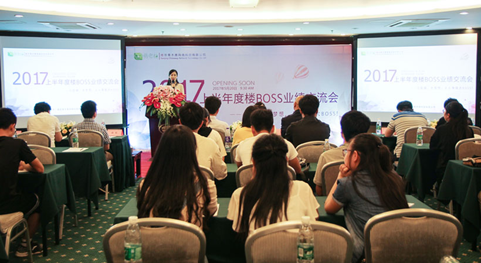
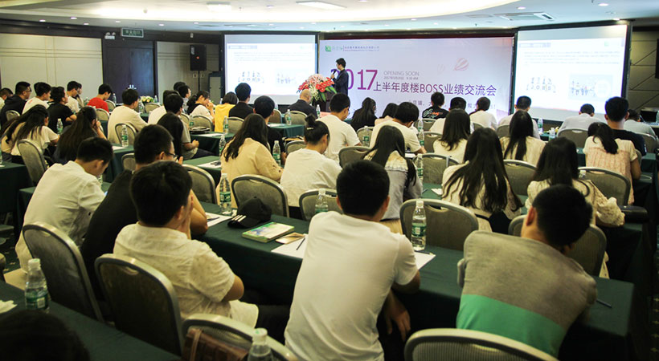
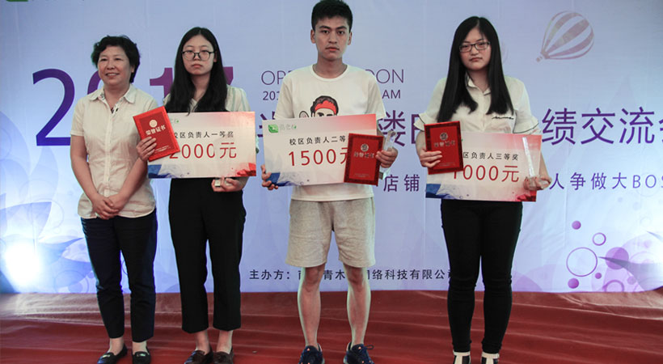

易考拉2017上半年度楼BOSS业绩交流会圆满结束
易考拉高校平台 你的校园生活管家
5月20日上午，南京青木惠网络科技有限公司主办的易考拉2017上半年度楼BOSS业绩交流会在南审国际学术交流中心隆重举行。会议特别邀请了合作伙伴中德科技创新中心董事长唐志红女士和总经理杜津先生、新航道英语、华章教育、中国联通等知名机构的负责人，以及南京30所高校的校区负责人和楼BOSS。
会议以南京青木惠网络科技有限公司总经理翁锐先生发言宣告正式开始。发言指出，易考拉是一个专注于服务大学生的校园O2O综合服务平台，于去年5月18日正式上线，至今已整整一年。它立足于高校市场，以生活超市为切入点，已在南京做出一定的规模，在学生群体中有良好的口碑。易考拉的三大价值：大学生用户群体、楼BOSS团队、优质合作企业，使其在众多平台中脱颖而出，也正是凭借着不断的创新，使得易考拉能够一直走到今天，而且会走得更远。
谈到创新，中德科技创新中心董事长和在座的各位大学生聊起了自己对创新的看法，指出创新是一种精神，创业是一种信仰。中德科技中心这个平台，让更多有梦之人看到梦想实现的可能，未来可以为更多人实现创业创新的梦想。
接着副总经理宋履安先生与大家分享了公司的成果。目前易考拉平台已拓展南京30所高校，开设近120家分店，无论是固定粉丝数量，还是日均订单、日均销售额、日均订单人数，在同类行业中都是遥遥领先的。目前在线生活超市、教育超市、移动充值等校园服务已正式推出，后期将会陆续推出娱乐超市、兼职就业、二手书籍等相关服务模块，全方位满足高校学生的校园需求
上午的最后一个环节是合作伙伴产品宣讲。合作机构向大家介绍了各自的教育培训产品及各自的实习、就业岗位需求。易考拉作为企业和学生之间的纽带，为双方提供各自所需的资源。至此，易考拉教育超市模块正式宣布上线运营。
下午是楼BOSS业绩评比颁奖环节，根据楼BOSS上半年度的销售情况，评出个人和校区一、二、三等奖，以及最佳推广奖、最佳成长奖，副总经理徐娟女士为获奖者颁奖。业绩突出的个人还与大家分享了自己的经验和销售技巧，获得了在场所有人的点赞。颁奖期间穿插着各种精彩的表演、游戏和抽奖活动，现场楼BOSS参与的热情非常高涨。
最后，南京青木惠网络科技有限公司董事长为大家致结束词。张总指出，易考拉平台不止于已有的商品供应，未来将推出全方位的高校服务，为大家的创业就业提供更广阔的的支持和成长的机会。易考拉平台今年下半年将主要深化南京的市场，明年将走出南京。我们在加快前进脚步的同时不会忘记本心。
此次会议在轻松的氛围中圆满结束，时间将见证易考拉走得更远。